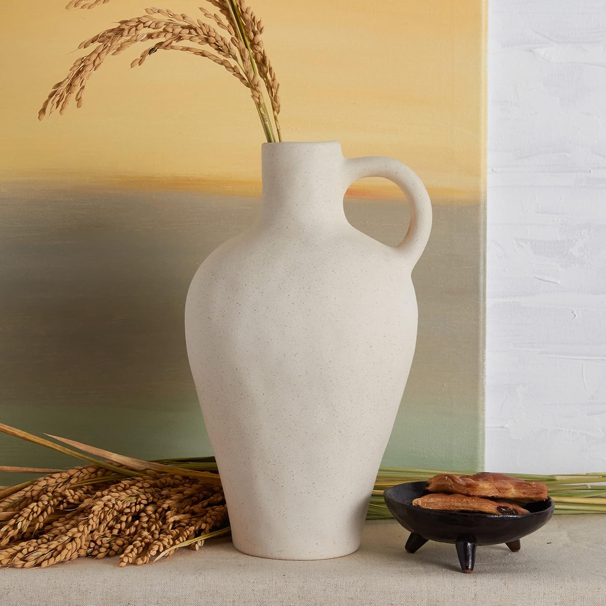

The Enchanted Blossom Ceramic Wall Vase immediately captivates with its delicate balance of form and ornament. Crafted from high-quality ceramic, its surface boasts a refined matte finish that subtly enhances the intricate floral patterns. These motifs are not merely printed but appear subtly embossed or artfully glazed, lending a tactile depth that speaks to artisanal attention. The design ethos leans towards a contemporary interpretation of biophilic principles, allowing the eye to trace whimsical blossoms that evoke a sense of an otherworldly garden. Its neutral palette, often featuring soft whites, muted greens, or gentle earth tones, ensures seamless integration into diverse interior schemes, from minimalist to more eclectically layered spaces, serving as a quiet focal point rather than an overwhelming presence.
Beyond its considerable aesthetic appeal, the Enchanted Blossom offers commendable real-world utility for the discerning homeowner. Engineered primarily as a pocket for air plants (Tillandsia) or small, trailing succulents, it cleverly addresses the challenges of vertical gardening in confined spaces. The ceramic construction feels substantial and durable, suggesting a longevity that belies its delicate appearance. Installation is straightforward, typically requiring a single, securely anchored screw or hook, allowing for flexible placement and creative arrangements. While it lacks an integrated drainage hole—a thoughtful design choice for moisture-minimalist plants like air plants to prevent water damage to walls—this means it's not suited for plants requiring regular watering without careful consideration for removal and rehydration. Its purposeful design ensures that once positioned, it provides a stable and charming home for botanical accents, effectively bringing a breath of natural whimsy to any wall.
This exquisitely crafted ceramic wall pocket introduces a delicate, enchanted garden aesthetic to contemporary interiors, perfect for showcasing small botanicals. It offers a unique vertical design element, enhancing any modern space with whimsical charm and natural elegance.
View Current Price| Material | High-Quality Glazed Ceramic |
| Key Feature | Hand-etched/Embossed Floral Patterns, Vertical Planter |
| Aesthetic Style | Whimsical Modern Biophilic |